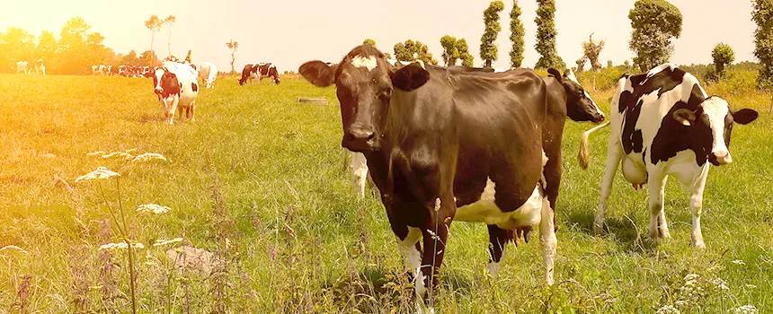

A Influência do Estresse Térmico na Realidade Brasileira
Estudo de campo em fazendas de Minas Gerais revela o impacto do clima tropical sobre a saúde e a produtividade do gado leiteiro.

Para quem vive no Brasil, o clima tropical traz benefícios, mas também apresenta desafios importantes, especialmente para a pecuária leiteira. Por dois anos consecutivos, um estudo voltado à identificação e ao combate do estresse térmico em rebanhos leiteiros acompanhou fazendas no Sudoeste de Minas Gerais, testando mudanças de manejo e aprofundando os dados coletados no verão anterior.
O Brasil é o terceiro maior produtor de leite do mundo e enfrenta um paradoxo climático: boa parte do território que reúne as melhores condições para a pecuária intensiva também é a mais afetada pelo estresse térmico durante o verão. Entender esse fenômeno com precisão, e não apenas na teoria, é o que torna pesquisas como esta especialmente relevantes para produtores e gestores de fazendas leiteiras que precisam de dados concretos para justificar investimentos em infraestrutura de resfriamento.
Por que o estresse térmico é um problema crítico na pecuária leiteira
Bovinos leiteiros, especialmente raças de alta produção como a Holandesa, têm zona de conforto térmico relativamente estreita. Acima de determinada combinação de temperatura e umidade, o animal precisa gastar energia metabólica para dissipar calor, energia que, em condições normais, seria destinada à produção de leite. Esse desvio de recursos fisiológicos é a razão pela qual o estresse térmico afeta diretamente a produtividade, mesmo quando não há sinais clínicos evidentes de desconforto.
O problema se agrava em sistemas de confinamento ou semiconfinamento, como o free-stall, onde a densidade de animais é maior e a troca de calor com o ambiente pode ser mais limitada do que em pastagens abertas, dependendo do projeto de ventilação da instalação.
Um indicador amplamente utilizado para avaliar o risco de estresse térmico é o Índice de Temperatura e Umidade (ITU). Quando esse índice ultrapassa 72, as vacas Holandesas já começam a apresentar redução na produção de leite e aumento da frequência respiratória. No Brasil, valores de ITU acima de 80 são comuns em meses de verão em regiões produtoras importantes como Minas Gerais, Goiás e São Paulo, o que significa que, sem intervenção de resfriamento, a perda de produção é praticamente garantida durante esse período.
Metodologia do estudo
Foram selecionadas seis fazendas com sistema free-stall e ventilação no Sudoeste de Minas Gerais. Termômetros intravaginais monitoraram a temperatura corporal central das vacas em lactação e pré-parto a cada 5 minutos, ao longo de 10 dias. Sensores ambientais registraram temperatura e umidade nos mesmos intervalos. O sistema de resfriamento operou em horário estendido diariamente para permitir avaliações mais criteriosas.
Objetivo da pesquisa
O estudo avaliou a relação do estresse térmico com variáveis que afetam a saúde e a produtividade animal, incluindo:
- Temperatura corporal dos animais
- Frequência respiratória
- Horas em que a temperatura corporal ultrapassou 39,1°C, limiar de estresse térmico
- Correlação com o percentual de gordura do leite
Resultados e discussão
Os dados mostraram que, mesmo com temperaturas ambientes abaixo de 30°C (entre 18°C e 27°C), a alta umidade decorrente de chuvas manteve os animais em estresse térmico, acima de 39,1°C. Esse achado é particularmente relevante porque reforça que o estresse térmico não depende apenas da temperatura do ar: a umidade relativa tem papel decisivo, já que dificulta a dissipação de calor por evaporação, o principal mecanismo de termorregulação do gado em climas quentes.
Essa descoberta tem implicação direta no design de sistemas de resfriamento: não adianta dimensionar o equipamento apenas para o pior dia de calor seco do verão. É preciso garantir desempenho eficaz também em dias nublados com alta umidade, que, no Sudoeste de Minas Gerais, são frequentes de novembro a março. O tipo de aspersor utilizado, a velocidade do fluxo de ar e o ciclo de acionamento precisam ser calibrados levando em conta esse cenário de alta umidade, não apenas as condições de máximo calor seco.
O aumento do tempo de operação dos ventiladores reduziu a temperatura dos animais de 39,3°C para 38,9°C, demonstrando a importância da ventilação no controle do estresse térmico. A combinação de ventilação forçada com aspersão de água é o que permite o resfriamento evaporativo: a água aplicada sobre o dorso do animal absorve calor ao evaporar, e o fluxo de ar acelera essa evaporação, potencializando o efeito de resfriamento em relação ao uso isolado de qualquer uma das duas técnicas.
Na análise dos lotes pré-parto, 100% dos lotes analisados estavam em estresse térmico. A literatura científica reforça os benefícios do resfriamento no período pré-parto sobre a lactação seguinte: estudos anteriores documentaram vacas resfriadas produzindo até 5 kg/dia a mais de leite, além de menor incidência de retenção de placenta e redução no período de gestação em animais sob estresse térmico.
Os dados também demonstraram que o percentual de gordura do leite aumentou à medida que as horas em estresse térmico diminuíram, na maioria dos lotes analisados.
Do ponto de vista econômico, esse dado é relevante porque o teor de gordura é um dos principais parâmetros de bonificação nos contratos de compra de leite das cooperativas e laticínios. Vacas que passam menos tempo em estresse térmico produzem não apenas mais leite, mas leite com composição mais valorizada, o que representa um duplo ganho financeiro para o produtor que investe em resfriamento eficaz.
100% dos lotes pré-parto analisados estavam em estresse térmico, um dado que reforça a urgência de cuidados redobrados nesse período do ciclo produtivo.
Por que o período pré-parto exige atenção redobrada
O período de transição, as semanas que antecedem e sucedem o parto, é fisiologicamente exigente para a vaca leiteira, mesmo sem o fator estresse térmico somado. A vaca pré-parto já enfrenta mudanças hormonais e metabólicas significativas, e adicionar o desafio de dissipar calor excedente nesse momento compromete tanto a saúde da matriz quanto o desempenho da lactação que se inicia logo em seguida. É por isso que sistemas de resfriamento dedicados a essa fase específica do ciclo produtivo costumam apresentar retorno proporcionalmente maior do que intervenções genéricas aplicadas ao rebanho todo.
A literatura científica documenta que vacas resfriadas adequadamente no período pré-parto apresentam bezerros com maior peso ao nascer, com melhores índices de imunidade passiva, o que reduz a mortalidade neonatal e o custo com medicamentos na fase de cria. Em uma análise de custo-benefício completa, portanto, os ganhos do resfriamento pré-parto vão além da produção de leite da mãe, eles impactam também a qualidade dos animais que entrarão no rebanho no futuro.
Principais conclusões e recomendações
- Intensificar os cuidados no período pré-parto para melhorar a lactação subsequente e a saúde da vaca
- Garantir a eficácia adequada dos sistemas de resfriamento
- Automatizar equipamentos e verificar o funcionamento correto de aspersores e ventiladores
- Instalar aspersores e ventiladores operando em ciclos
- Buscar velocidade de vento de aproximadamente 10 km/h junto aos animais
- Manter taxa de aplicação de água de cerca de 1 litro por vaca por ciclo
- Monitorar continuamente a relação entre estresse térmico e percentual de gordura do leite
Esse conjunto de recomendações também tem aplicação direta em outras frentes do agronegócio: a lógica de aspersão combinada à ventilação para reduzir temperatura e melhorar o bem-estar animal é a mesma empregada em soluções de canhão de névoa para pecuária, voltadas ao controle simultâneo de poeira e conforto térmico em currais e confinamentos. A automatização dos sistemas de resfriamento, em particular, é um ponto de alta alavancagem: equipamentos com acionamento por sensor de temperatura e umidade eliminam a dependência do monitoramento manual e garantem que o resfriamento ocorra nos momentos de maior risco, mesmo durante a madrugada ou em dias de semana com menor equipe no campo.
Propriedades que já investiram em monitoramento climático da instalação têm uma vantagem adicional: os dados coletados ao longo das temporadas permitem ajustar progressivamente os parâmetros de acionamento, otimizando o consumo de água e energia sem abrir mão da eficácia do resfriamento. Esse tipo de gestão baseada em dados é cada vez mais acessível com os sistemas de automação disponíveis no mercado e representa o caminho para operações de pecuária leiteira mais eficientes e sustentáveis. Para entender como a tecnologia de névoa pode ser aplicada em múltiplos contextos do agronegócio, consulte a página de áreas de atuação Suppress.
Conclusão
O estudo confirma que o clima tropical brasileiro impõe desafios reais à pecuária leiteira, mesmo em condições de temperatura aparentemente amenas. O monitoramento constante, aliado a sistemas eficientes de ventilação e aspersão, é essencial para reduzir o estresse térmico e preservar a saúde e a produtividade do rebanho, especialmente no período crítico pré-parto. Em propriedades que também lidam com poeira gerada pela movimentação de animais e maquinário, vale considerar soluções integradas: o artigo sobre tipos e riscos da poeira mineral traz contexto adicional sobre como partículas em suspensão afetam ambientes produtivos.
O resultado final de um programa bem estruturado de controle do estresse térmico na pecuária leiteira é, ao mesmo tempo, um ganho zootécnico, mais leite e de melhor qualidade, e um ganho de bem-estar animal, que vai ao encontro das expectativas crescentes de consumidores, varejistas e exportadores em relação à forma como o gado é manejado no Brasil. Investir nessa tecnologia é, portanto, tanto uma decisão de gestão quanto um posicionamento estratégico de longo prazo para a atividade leiteira no país.
Perguntas Frequentes
O que causa o estresse térmico em vacas leiteiras?
O estresse térmico ocorre quando a combinação de temperatura e umidade do ar ultrapassa a capacidade do animal de dissipar calor pelos mecanismos naturais de termorregulação, forçando o organismo a desviar energia metabólica para resfriamento em vez de produção de leite.
A umidade do ar influencia o estresse térmico mesmo em temperaturas amenas?
Sim. O estudo mostrou que, mesmo com temperaturas entre 18°C e 27°C, a alta umidade decorrente de chuvas manteve os animais em estresse térmico, pois a umidade dificulta a dissipação de calor por evaporação.
Por que o período pré-parto é mais crítico para o controle do estresse térmico?
Nesse período a vaca já enfrenta mudanças hormonais e metabólicas intensas. Resfriar adequadamente as fêmeas pré-parto está associado a maior produção de leite na lactação seguinte, menor incidência de retenção de placenta e gestações mais saudáveis.
Quer reduzir o estresse térmico no seu rebanho?
Fale com nossos engenheiros e descubra a solução ideal para conforto térmico na sua fazenda.
Solicitar Proposta